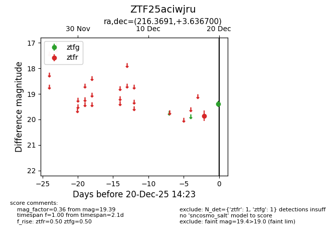
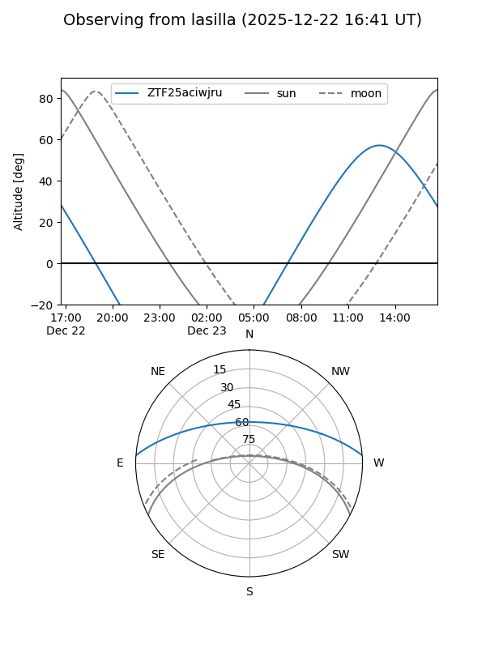
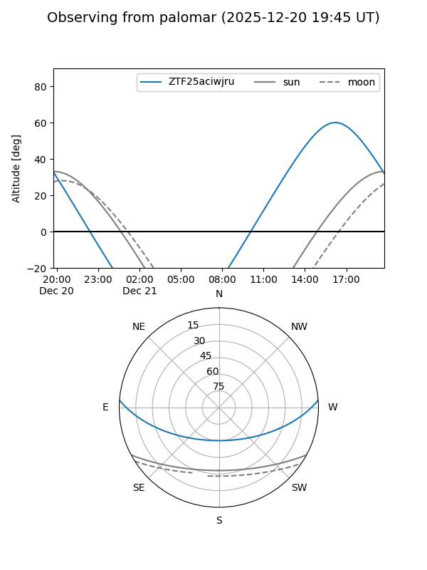
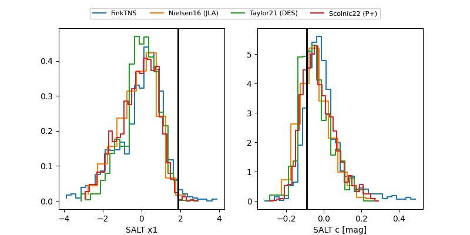

ZTF25aciwjru
Target ZTF25aciwjru at 2025-12-21 15:02
Aliases and brokers:
FINK: fink-portal.org/ZTF25aciwjru
Lasair: lasair-ztf.lsst.ac.uk/objects/ZTF25aciwjru
ALeRCE: alerce.online/object/ZTF25aciwjru
alt names
ZTF25aciwjru (ztf,fink_ztf)
Coordinates:
equatorial (ra, dec) = 216.3691,+3.63670
equatorial (HMS+DMS) = 14:25:28.58,+03:38:12.12
galactic (l, b) = (350.7425,+57.50013)
Flags:
Photometry:
last ztfg=19.26, ztfr=19.63
2 ztfg, 4 ztfr detections
Lightcurve

Visibility


Additional plots
